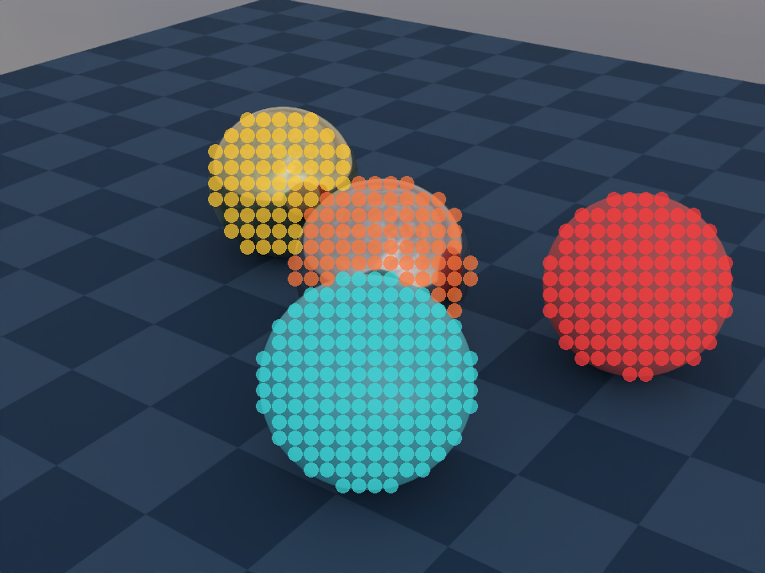

Object picking#
The Nyx plugin exposes a ray API on every Nyx camera: pick_pixel() (camera_index, x, y) casts a ray from the camera through one pixel of its framebuffer and returns the first Genesis entity it hits, along with the world-space hit point. It’s the entry point for picking, hover hit-tests, click-to-select tooling, and any “what’s under this pixel?” question you’d otherwise need a separate ID buffer for.
This example names four balls by their colour, casts a grid of rays across the rendered frame, and uses pick_pixel’s return value to (a) drop a colour-keyed dot on top of every hit and (b) print a per-ball hit count and mean world position to stdout.

What it shows#
Four spheres named by their colour (
gold,copper,red,cyan) on a GenesisPlane, lit by an HDR environment map.A 48 × 36 grid of
pick_pixelcalls across the rendered frame — one ray per grid cell, 1 728 rays total.Each hit drawn as a translucent coloured dot keyed by entity. Plane hits and sky misses are both filtered out — the overlay isolates only the four balls.
A stdout summary line per ball:
<name> <count> hits mean pos=(x, y, z). The name comes from a Python dict keyed by the entity object the API returned; the position comes from thepositionfield of the samepick_pixelresult averaged across every hit on that ball.
The ray API in one call#
result = cam.pick_pixel(camera_index=0, x=px, y=py)
camera_indexindexes into the cameras that share this sensor’s renderer. For a singleNyxCameraSensorit’s always0; multi-camera setups index in registration order.x,yare pixel coordinates with the origin at the top-left of the framebuffer. They must lie inside the camera’s configuredres.The call returns either
None(the ray hit nothing in the scene — the background / sky) or aNyxPickPixelResultnamed tuple with three fields:
Field |
Type |
Meaning |
|---|---|---|
|
|
The same Python object the user passed to |
|
|
Sub-geometry hit. For URDF entities it’s the link name; for MJCF entities it’s |
|
|
World-space hit point |
Getting a name back from the API#
Genesis primitives don’t carry a string identifier the renderer can hand you, so for non-URDF / non-MJCF entities link_name is empty. To label a hit with something the rendered image is named by, hold onto your own {entity: name} mapping at construction time and resolve through it after the pick:
scene.add_entity(morph=gs.morphs.Plane(...)) # in the scene, NOT in the name table
gold = scene.add_entity(morph=gs.morphs.Sphere(...), surface=gs.surfaces.Gold())
red = scene.add_entity(morph=gs.morphs.Sphere(...), surface=gs.surfaces.Plastic(...))
names = {id(gold): "gold", id(red): "red", ...}
res = cam.pick_pixel(0, px, py)
if res is None:
... # background (sky); ignore
elif id(res.entity) not in names:
... # hit something we don't care about (the plane); ignore
else:
name = names[id(res.entity)] # "gold", "red", ...
print(f"hit {name} at {res.position}")
The id() key works because pick_pixel returns the same Python object you passed to scene.add_entity — no copy, no proxy. Plain == works for the same reason, but id() keeps the lookup O(1) and side-effect-free. Leaving entities you don’t want to pick out of the lookup table is also how the example filters the plane: any ray that hits the ground falls into the not in names branch and is dropped, without ever needing a per-entity blacklist.
The picking loop#
The overlay is a transparent RGBA image the script draws into, then alpha-composites over the rendered RGB. Each accepted hit does two things — splat a dot, and accumulate the world hit position into a running sum keyed by name so the stdout summary at the end shows a mean rather than a single noisy sample:
for gy in range(GRID_H):
py = int((gy + 0.5) * H / GRID_H)
for gx in range(GRID_W):
px = int((gx + 0.5) * W / GRID_W)
res = cam.pick_pixel(0, px, py)
if res is None:
continue # background (sky)
name = name_by_eid.get(id(res.entity))
if name is None:
continue # entity outside the picking set (plane)
draw.ellipse(..., fill=BALLS[name][2])
wx, wy, wz = res.position
h = hits[name]
h[0] += 1; h[1] += wx; h[2] += wy; h[3] += wz
Notes worth keeping in mind#
Picking does not require a render. The renderer can pick-trace a ray as soon as the scene has been built —
cam.read()(or evenscene.step()) is not a prerequisite. The example happens to render first because it wants to draw the overlay over the rendered image, but the samepick_pixelcalls would work right afterscene.build(...).Picking does not consume samples. Sample budgets (
spp,render_mode, denoising) configure the render pipeline.pick_pixelalways traces a single deterministic ray and is unaffected by those settings.The picked entity object is the registered one.
result.entity is entity_you_added_to_the_sceneholds, so identity comparisons andid()-keyed dicts both work.Noneis background, an unregistered entity is “ignore”. Sky rays returnNone; rays that hit something in the scene but not in your lookup table (the plane, in this example) come back as a fully validNyxPickPixelResultyou simply choose to skip. Both branches leave the original render untouched in the overlay.One pick = one native call. The plugin doesn’t currently batch picks;
pick_pixel()is a thin Python wrapper around a single native ray trace. For a few hundred picks per frame this is fine; for full-screen ID buffers you’ll want to render once at full resolution and only pick the pixels you actually need (the cursor location, a small lasso, etc.).
Reading the saved image and the stdout#
The coloured dots in the saved PNG are the entity-ID buffer: each one is one
pick_pixelhit that resolved to a registered ball, coloured to match the rendered surface it landed on.Where the dots disappear, the ray either missed every entity (sky) or hit the plane (filtered out by leaving it out of the picking table). Both cases let the original render show through unmodified.
The terminal output prints one line per ball, e.g.
gold 123 hits mean pos=(-1.00, +0.50, +0.65). The colour name came back out ofpick_pixelvia thename_by_eidlookup; the mean position isres.positionaveraged across every hit on that ball, which is stable enough to compare againstadd_entity(pos=...)and confirm Z-up world coordinates.
Source#
1"""Object picking example for the Nyx renderer plugin.
2
3Demonstrates the **ray API** exposed through
4``NyxCameraSensor.pick_pixel``: given a pixel coordinate, the renderer
5traces a ray from the camera through that pixel and reports the first
6scene entity it hits (or ``None`` for background).
7
8The script names each ball by its colour, renders the scene, then casts
9a coarse grid of rays. Every hit drops a translucent dot on the overlay
10so the image reads like a low-resolution ID buffer. The per-ball hit
11count and the mean world hit position recovered from ``pick_pixel`` are
12printed to stdout — the API's return value is the only data source.
13
14Usage:
15 uv run python examples/06_object_picking.py
16"""
17
18from __future__ import annotations
19
20import os
21
22from PIL import Image, ImageDraw
23
24import genesis as gs
25import gs_nyx.nyx_py_renderer as npr
26import gs_nyx.nyx_py_sdk as nps
27from gs_nyx_plugin.nyx_camera_options import NyxCameraOptions
28
29
30HERE = os.path.dirname(__file__)
31ENV_MAP = os.path.join(HERE, "assets", "kloppenheim_07_puresky_4k.hdr")
32OUTPUT_PATH = os.path.join(HERE, "out", "06_object_picking.png")
33
34CAM_RES = (960, 720)
35GRID_W, GRID_H = 48, 36
36
37# Four balls named by colour. ``name -> (surface, world_pos, dot_rgba)``.
38# The plane is rendered for shadows but kept out of this dict, so any
39# ray that hits the ground falls into the "not in BALLS" branch and is
40# silently ignored.
41BALLS = {
42 "gold": (gs.surfaces.Gold(), (-1.0, 0.5, 0.4), (255, 200, 50, 180)),
43 "copper": (gs.surfaces.Copper(), ( 0.0, 0.0, 0.4), (255, 120, 60, 180)),
44 "red": (gs.surfaces.Plastic(color=(0.85, 0.10, 0.10)), ( 1.0, 0.5, 0.4), (255, 60, 60, 180)),
45 "cyan": (gs.surfaces.BSDF(color=(0.10, 0.60, 0.65), metallic=0.0, roughness=0.2), ( 0.5, -0.8, 0.4), ( 60, 220, 220, 180)),
46}
47
48
49def main() -> None:
50 gs.init()
51 os.makedirs(os.path.dirname(OUTPUT_PATH), exist_ok=True)
52
53 scene = gs.Scene(sim_options=gs.options.SimOptions(dt=0.01), show_viewer=False)
54 scene.add_entity(morph=gs.morphs.Plane(plane_size=(10.0, 10.0)))
55
56 # Single lookup that ties an entity returned by ``pick_pixel`` back
57 # to its colour name. Plane is not in here on purpose.
58 name_by_eid: dict[int, str] = {}
59 for name, (surface, pos, _) in BALLS.items():
60 e = scene.add_entity(
61 morph=gs.morphs.Sphere(pos=pos, radius=0.4, fixed=True, collision=False),
62 surface=surface,
63 )
64 name_by_eid[id(e)] = name
65
66 env_map = nps.EnvironmentMapAsset()
67 env_map.texture = ENV_MAP
68 env_map.layout = nps.EEnvMapLayout.LongLat
69 env_map.multiplier = 2.0
70
71 cam = scene.add_sensor(NyxCameraOptions(
72 res = CAM_RES,
73 pos = (2.5, -3.5, 2.6),
74 lookat = (0.0, 0.0, 0.3),
75 fov = 30.0,
76 spp = 64,
77 render_mode = npr.ERenderMode.FastPathTracer,
78 env_maps = (env_map,),
79 ))
80
81 scene.build(n_envs=1)
82 scene.step()
83
84 base = Image.fromarray(cam.read().rgb[0].cpu().numpy()).convert("RGBA")
85 W, H = CAM_RES
86 overlay = Image.new("RGBA", (W, H), (0, 0, 0, 0))
87 draw = ImageDraw.Draw(overlay)
88 dot_r = max(1, min(W // GRID_W, H // GRID_H) // 2 - 1)
89
90 # Per-ball: [hit count, sum world x, sum world y, sum world z].
91 # Stays empty for any ball the grid never lands on.
92 hits: dict[str, list[float]] = {n: [0.0, 0.0, 0.0, 0.0] for n in BALLS}
93
94 for gy in range(GRID_H):
95 py = int((gy + 0.5) * H / GRID_H)
96 for gx in range(GRID_W):
97 px = int((gx + 0.5) * W / GRID_W)
98 res = cam.pick_pixel(0, px, py)
99 if res is None:
100 continue # background (sky)
101 name = name_by_eid.get(id(res.entity))
102 if name is None:
103 continue # entity outside the picking set (plane)
104 draw.ellipse((px - dot_r, py - dot_r, px + dot_r, py + dot_r), fill=BALLS[name][2])
105 wx, wy, wz = res.position
106 h = hits[name]
107 h[0] += 1; h[1] += wx; h[2] += wy; h[3] += wz
108
109 Image.alpha_composite(base, overlay).convert("RGB").save(OUTPUT_PATH)
110
111 print(f"Saved {OUTPUT_PATH}")
112 for name, (n, sx, sy, sz) in hits.items():
113 if n:
114 print(f" {name:<6} {int(n):>4} hits mean pos=({sx/n:+.2f}, {sy/n:+.2f}, {sz/n:+.2f})")
115 else:
116 print(f" {name:<6} 0 hits")
117
118
119if __name__ == "__main__":
120 main()
Run it:
uv run python examples/06_object_picking.py
The PNG is written to examples/out/06_object_picking.png. The Sphinx build copies it to _static/generated/examples/06_object_picking.png and embeds it at the top of this page, so the docs site always shows whatever the latest run produced.
See also#
Hello, Nyx — The minimal Nyx scene the picking grid is layered on top of conceptually: same camera + env-map setup, without the overlay step.
Attaching a camera — How
NyxCameraSensorintegrates with Genesis’ sensor manager. Picking inherits the same lifecycle: any sensor returned byscene.add_sensor(NyxCameraOptions(...))exposespick_pixel().Sensor lifecycle — When the sensor is built, when the renderer is ready, and what does (and does not) need to happen before
pick_pixel()is callable.